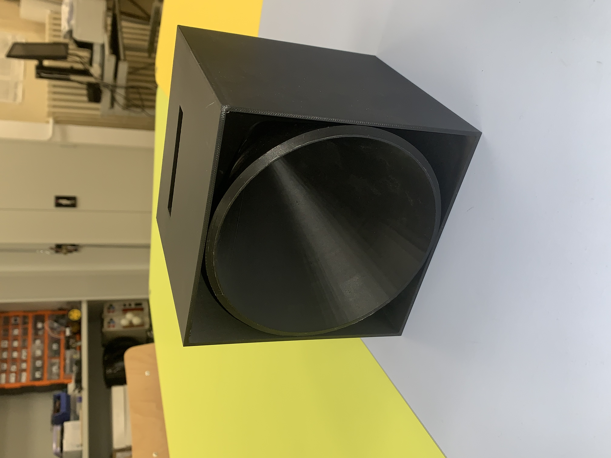
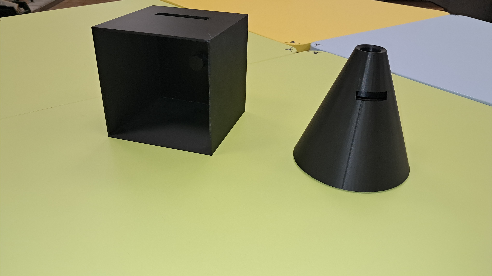

L'amplificateur de son permet, comme est indiqué dans le nom, d'amplifier le son d'un téléphone portable en milieu extérieur. Il contient un système mécanique, et nécessite aucune énergie.
/"
"/Amplificateur de son assemblé.

Amplificateur de son désassemblé. Boîtier et cône amplificateur.
Découvrir le fonctionnement